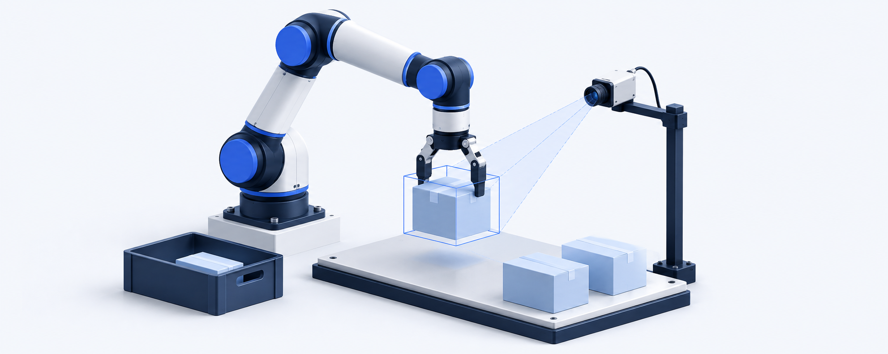

수행 중 · Ongoing
K-온디바이스 AI반도체 기술개발사업
차세대 협동로봇향 온디바이스 AI 솔루션 및 표준 모델을 활용한 서비스 기술 개발

- 수행기간
- –
- 주관연구개발기관
- 두산로보틱스
- 중앙행정기관
- 산업통상부
- 전문기관
- 한국산업기술기획평가원
프로젝트 개요
협동로봇을 위한 온디바이스 AI 솔루션과 표준 모델 기반 서비스 기술을 개발하는 연구과제입니다. 작업 인지·계획과 모델 경량화 등 AI 기술을 연결하여, 제한된 연산 환경에서 실제 작업을 수행하는 지능형 시스템을 지향합니다.